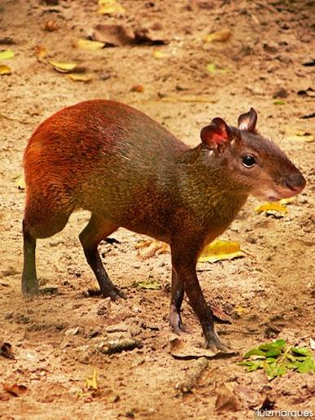

A cutia (gênero Dasyprocta)
- Aparência física:
Possui corpo esguio, pernas posteriores longas e ágeis (que permitem saltos de até 6 metros), cauda muito curta ou ausente, e pelagem grossa e brilhante em tons de marrom, alaranjado ou pardo. Seus dentes incisivos são fortes, afiados e de coloração alaranjada, crescendo continuamente. - Hábitos :
É um animal predominantemente diurno ou crepuscular, de comportamento tímido e solitário ou em casais/pequenos grupos. Quando alarmada, emite um som semelhante a um latido e pode eriçar os pelos do dorso.

Mamífero roedor de médio porte, medindo entre 49 e 64 cm e pesando de 2 kg a 6 kg